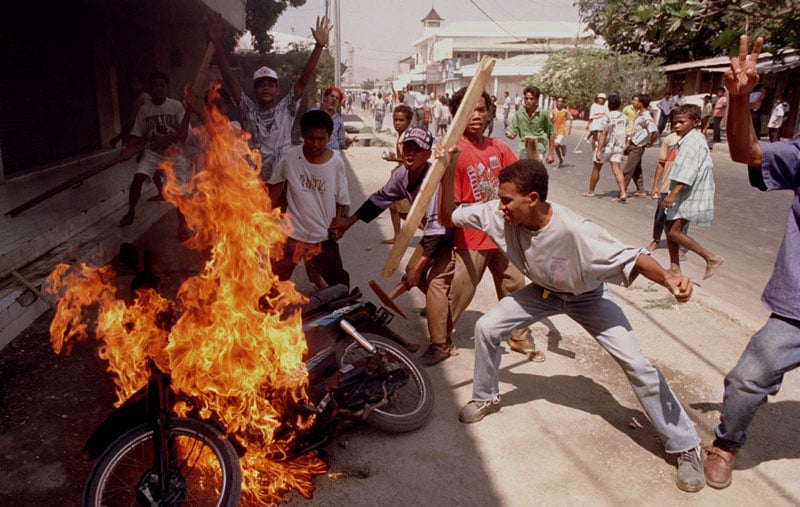

Americano nascido em 1956, Jeff Widener sempre quis ser fotógrafo, fotojornalista mais precisamente. Embora haja pouco nas mídias sobre ele, sua biografia ficou marcada pela "The Tank
Man" ou "O Rebelde Desconhecido" uma foto icônica feita em 1989 que registra o massacre na Praça Tiananmen,
na China,
Em 1989, durante os protestos da Praça Tiananmen (China), o fotógrafo flagrou um solitário protestante, na frente de uma fileira de tanques de guerra, bloqueando sua passagem por mais de 30 minutos.[1]
A foto estampou páginas de jornais em todo o mundo, diante da censura chinesa à imprensa internacional.
O momento da foto foi registrado do sexto andar do Hotel Pequim, a pouco mais de 800 metros de distância, com máquina fotográfica de lentes 400 milímetros. Pelo trabalho, foi posteriormente indicado ao Prêmio Pulitzer 1990 por "Spot News Photography", e ganhou vários outros no decorrer dos anos.
Desde 2004, Widener é fotógrafo do The Honolulu Advertiser.[2]

1994 Timor Leste